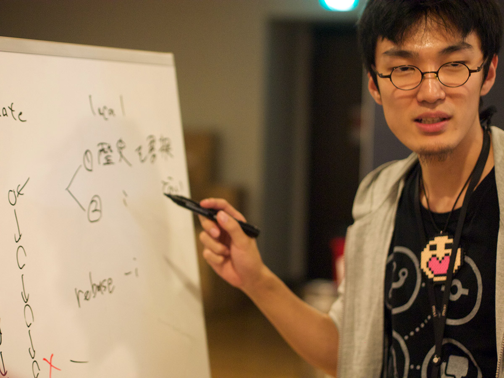
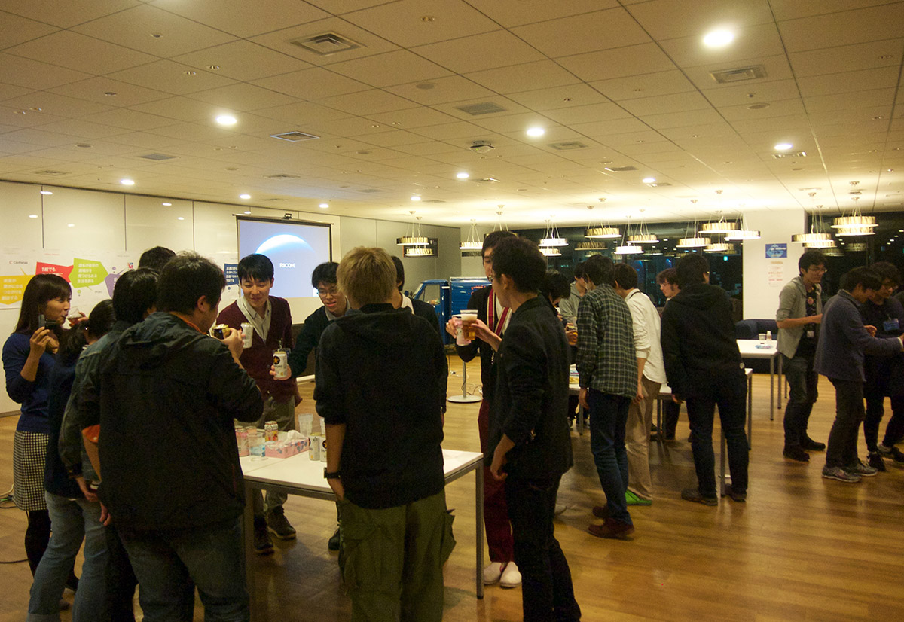

git challenge publications
第01回 git challenge (2015.11.15)
Links
- git challenge 2015.11.15 - Togetterまとめ
- 学生向けイベント「git challenge」のご案内 - mixi Engineers’ Blog
- 技術イベントを会社探しと自分磨きに――Git勉強会を仕切るmixiの若きリファクター - ＠IT
- Git Challenge 開催しました - 若き JavaScripter の悩み
- git challengeという技術イベントをやりました - なんか:かんがえて-6
参加者の記事
- git challengeに参加してきたよ - 無限面のサイコロは球なのか？
- ミクシィのGit Challengeに参加した話 - プログラミングで世界を変える
- git challengeに参加して3位だった - S_Shimotori’s diary
様子など
前日の会場準備…
明後日に迫った「git challenge」の会場準備中です。 #mixi_git #mixi_collabo pic.twitter.com/YpBW8Fbjng
— ミクシィグループ 新卒採用公式アカウント (@HR_mixi) November 13, 2015
明後日に迫った「git challenge」の会場準備中です。 #mixi_git #mixi_collabo pic.twitter.com/YpBW8Fbjng
— ミクシィグループ 新卒採用公式アカウント (@HR_mixi) November 13, 2015
git repoの無理難題を解いていく新しい技術イベントgit challengeはいよいよ明後日! 参加者の皆さん, お待ちしてます!https://t.co/hvzUwNDz5e#mixi_git #mixi_collabo pic.twitter.com/S5B79DUy4b
— mixi engineers (@mixi_engineers) November 13, 2015
そして当日!
git challenge (ぎっと・ちゃれんじ) は、gitリポジトリに設けた無理難題を解いていく、ミクシィの新しい競技型技術ワークショップ・イベントです。きょうはその第1回!
— mixi engineers (@mixi_engineers) November 15, 2015
くわしくは https://t.co/hvzUwNDz5e をどうぞ#mixi_git
git challenge はじまるよ！！✧＼\ ٩( 'ω' )و /／✧ #mixi_git
— 菊池紘 (@kikuchy) November 15, 2015
There was a 'Forbidden' error fetching URL: 'http://twitter.com/kodam/status/665712169313406978'
いんふられでぃーです #mixi_git
— Kuniwak@A man using Vanilla DI/Mock (@orga_chem) November 15, 2015
参加者もぞくぞくと…
きた(`・ω・´) #mixi_git
— 松阪牛 (@matsusaka_gyu) November 15, 2015
mixiのgit challengeイベント来てる#mixi_git
— こばけん@再生産 (@koba_dog) November 15, 2015
はじまるよー！ #mixi_git
— HAL (@halhorn) November 15, 2015
久々に #mixi 来た#mixi_git #mixi_collabo
— Tomohiro Imaizumi (@imaizume) November 15, 2015
#mixi_git きたよー
— まるさ (@maruuusa83) November 15, 2015
参加者の皆様みんなgit経験者だ #mixi_git
— きよぽん (@kiy0p0n) November 15, 2015
そして、キーノートからスタート
第1回git challenge, さきほどスタートしました! まずはキーノートから。#mixi_git pic.twitter.com/cfkGERdugj
— mixi engineers (@mixi_engineers) November 15, 2015
始まった #mixi_git
— きよぽん (@kiy0p0n) November 15, 2015
雑な使い方してるからやばい #mixi_git
— sinner (@sinner_shiki) November 15, 2015
There was a 'Forbidden' error fetching URL: 'http://twitter.com/anthony_1618/status/665712975815159808'
今回の講師は、今回の Git-Challenge の最強問題をくぐり抜けた猛者です #mixi_git
— HAL (@halhorn) November 15, 2015
いよいよ、git challengeの第0問といいますか、チュートリアルが始まりました。スコアボード、実際には強烈なCircleCI画面が会場に映写されはじめています。#mixi_git pic.twitter.com/TiWcqqlk0q
— mixi engineers (@mixi_engineers) November 15, 2015
全員チュートリアル突破 #mixi_git
— ᴉɥsᴉuɐʞɐu oɹɐʇuǝʞ (@cfiken) November 15, 2015
問題が解けて正しくcommit; pushされると、CirclrCIから専用slackにこんなふうにbotが囁いてくれます #mixi_git pic.twitter.com/NwVXLwSzT0
— mixi engineers (@mixi_engineers) November 15, 2015
@mixi_engineers typoしたぜ… s/CirclrCI/CircleCI/ #mixi_git
— Jun Morimoto (@shakuji) November 15, 2015
ここで、ランチタイム
今日のおひるごはんは、ちらしずし!
ちらし🍣 #mixi_git pic.twitter.com/lYIw2s7KNN
— 松阪牛 (@matsusaka_gyu) November 15, 2015
と、千歳飴!
今日は七五三 #mixi_git
— きよぽん (@kiy0p0n) November 15, 2015
きょう2015.11.15はなんの日? 七五三です。というわけで参加者には千歳飴も配られました。当然お帰りの際にはみなさん千歳飴を下げて帰っていただきます!#mixi_git pic.twitter.com/2dhr9KS2mI
— mixi engineers (@mixi_engineers) November 15, 2015
さて、食後は少しくつろぎつつ…
コンフリクト（マイク） #mixi_git
— sinner (@sinner_shiki) November 15, 2015
無線マイクのコンフリクトも解決 #mixi_git
— きよぽん (@kiy0p0n) November 15, 2015
第一問:無線マイクのコンフリクト解決 #mixi_git
— ᴉɥsᴉuɐʞɐu oɹɐʇuǝʞ (@cfiken) November 15, 2015
会場スピーカーに、よその無線マイクさんからの混信も発生するという、まさにgit challengeにふさわしいコンフリクトなトラブルも発生#mixi_git pic.twitter.com/iDTDOvJ6ub
— mixi engineers (@mixi_engineers) November 15, 2015
午後から、いよいよ競技開始!
さて、始まった…
deployが遅れ開始時間がずれてすみません。第1問、着々と解けてcommit, pushできたチームが現れてます! #mixi_git pic.twitter.com/JQOoe6g0kR
— mixi engineers (@mixi_engineers) November 15, 2015
皆粛々と解いている #mixi_git
— HAL (@halhorn) November 15, 2015
こんな感じで着々と各チームからpushが #mixi_git pic.twitter.com/6YCQawh2SC
— mixi engineers (@mixi_engineers) November 15, 2015
みんな解くの早い…！ #mixi_git
— 菊池紘 (@kikuchy) November 15, 2015
みんなすごい！どんどん解いてる #mixi_git
— ᴉɥsᴉuɐʞɐu oɹɐʇuǝʞ (@cfiken) November 15, 2015
みんな集中しまくってTLが動かない #mixi_git
— ᴉɥsᴉuɐʞɐu oɹɐʇuǝʞ (@cfiken) November 15, 2015
黙々とチャレンジしていくみんな… (基本的に2人ずつのチームに分かれて問題を解いていきます)
ぐぎぎ・・・ #mixi_git
— まるさ (@maruuusa83) November 15, 2015
There was a 'Forbidden' error fetching URL: 'http://twitter.com/kodam/status/665781602362880001'
皆さん結構解いててすごい！ #mixi_git
— ᴉɥsᴉuɐʞɐu oɹɐʇuǝʞ (@cfiken) November 15, 2015
そして2年の時が流れた… (実際には4時間)
ムズかった#mixi_git #mixi_collabo pic.twitter.com/K2cQhplwJi
— Tomohiro Imaizumi (@imaizume) November 15, 2015
gitむじゅい #mixi_git
— \ｱｯｶｻｰﾝ/ (@asakasakasas) November 15, 2015
あーーー、悔しいな。もっと正解したかったけど勉強になりました。#mixi_git
— はっとりぬ (@moroku0519) November 15, 2015
おつかれさま。懇親会的なタイムだ



おつかれさまでした !!!
完全に七五三の帰りだった #mixi_git https://t.co/cJNxO2Sazy
— (TAT)j (@tatarhy) November 15, 2015
参加者のみなさんに いろいろブログエントリいただきました!
帰ってブログを書くまでがgitchallenge #mixi_git
— sinner (@sinner_shiki) November 15, 2015
ぶろぐかいたよ＝＝＝
— まるさ (@maruuusa83) November 15, 2015
git challengeに参加したよhttps://t.co/B6vqaYrtBT
はてなブログに投稿しました #はてなブログ #mixi_git
— Kuniwak@A man using Vanilla DI/Mock (@orga_chem) November 15, 2015
Git Challenge 開催しました - 若き JavaScripter の悩みhttps://t.co/ptDwrgu4M6
Togetter中の人からもコメントいただきました! わーい!
CircleCIで解答を審査する仕組み、超合理的ですね!!! Git力高めたい!!! #git #mixi_git / .@mixi_engineers さんの「git challenge 2…」をお気に入りにしました https://t.co/bu1U6bqbcN
— トゥギャッター開発まとめ (@tg__dev) November 17, 2015
@tg__dev ありがとうございます！全体的なシステム構成はこんな感じです: https://t.co/Ji08xU7w1p #mixi_git
— mixi engineers (@mixi_engineers) November 17, 2015
.@mixi_engineers こちらこそわざわざありがとうございます！ 「開催しました」記事（https://t.co/JLgVDFoQxU）も拝見しました！ これほどの規模にはならないかもしれませんが、CircleCIの用途拡大は試みたいですね…。
— トゥギャッター開発まとめ (@tg__dev) November 17, 2015